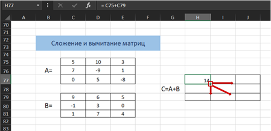
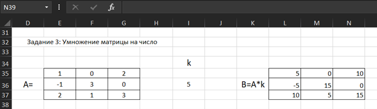
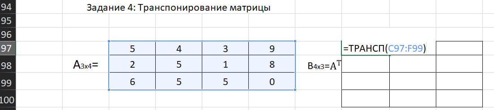
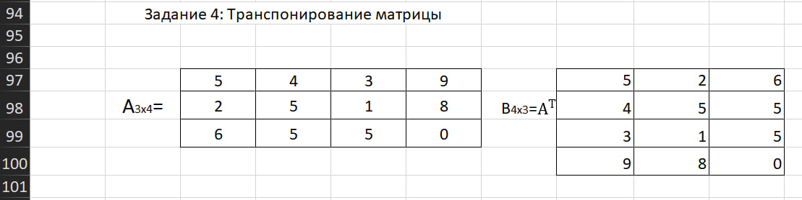
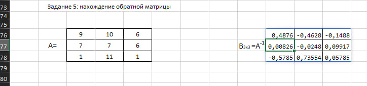
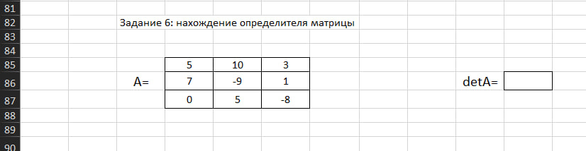
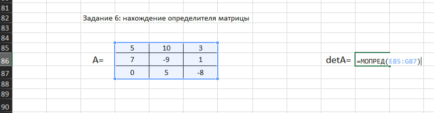
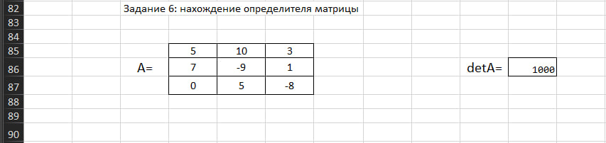

Следует отметить, что складывать и вычитать можно матрицы одинаковой размерности (одинаковое количество строк и столбцов у каждой из матриц).
Рассмотрим матрицы А и В размерностью 3х3. Вычислим сумму этих матриц.
Для этого в ячейку H77 введем формулу =C75+C79, где C75 и C79 – первые элементы матриц А и В соответственно.
При этом формула содержит относительные ссылки C75 и C79, чтобы при копировании формулы на весь диапазон матрицы С они могли измениться.
С помощью маркера автозаполнения скопируем формулу из ячейки H77 вниз и вправо на весь диапазон матрицы С.
Для вычитания матрицы В из матрицы А (С=А - В) в ячейку H77 введем формулу =C75-C79 и скопируем её на весь диапазон матрицы С.
Сделайте вычисления в Excel и проверьте ваш ответ.
Даны матрицы:
| 0 | 5 | 2 |
| 1 | -1 | 3 |
| -2 | 0 | 7 |
| 0 | 3 | 2 |
| -4 | 0 | -1 |
| 0 | 7 | -3 |
Вычислите:
Сделайте вычисления в Excel и проверьте ваш ответ.
Даны матрицы из задания 1:
| 0 | 5 | 2 |
| 1 | -1 | 3 |
| -2 | 0 | 7 |
| 0 | 3 | 2 |
| -4 | 0 | -1 |
| 0 | 7 | -3 |
Вычислите:
Рассмотрим матрицу А размерностью 3х4. Умножим эту матрицу на число k. При умножении матрицы на число получается матрица такой же размерности,
что и исходная, при этом каждый элемент матрицы А умножается на число k..
Выделяем диапазон, в котором будет вычислен результат, вводим знак «=», выделяем диапазон, содержащий исходную матрицу А,
нажимаем на клавиатуре знак умножить (*) и выделяем ячейку с числом k.
После ввода формулы нажимаем Enter, чтобы значениями заполнился весь диапазон.
Для выполнения деления в данном примере в диапазон вводим формулу =E35:G37/I36, т.е. знак «*» меняем на «/».
Сделайте вычисления в Excel и проверьте ваш ответ.
Дана матрица A =
| 1 | 0 | 2 |
| -1 | 3 | 0 |
| 2 | 1 | 3 |
Введите результат умножения:
Введите результат деления, если число нецелое, использовать точку «.»:
Следует отметить, что умножать матрицы можно только в том случае, если количество столбцов первой матрицы А равно количеству строк второй матрицы В.
Рассмотрим матрицы А размерностью 3х3 и В размерностью 3х3. При умножении этих матриц получится матрица С размерностью 3х3.
Вычислим произведение этих матриц С=А*В с помощью встроенной функции =МУМНОЖ(). Для этого в ячейку H77 введем формулу =МУМНОЖ(),
где массив1 и массив2 – матрицы А и В соответственно. После нажимаем Enter.
Мы получим результат умножения матриц А и В.
Сделайте вычисления в Excel и проверьте ваш ответ.
| 0 | 5 | 2 |
| 1 | -1 | 3 |
| -2 | 0 | 7 |
| 0 | 3 | 2 |
| -4 | 0 | -1 |
| 0 | 7 | -3 |
Введите результат A×B:
Транспонирование матрицы — операция над матрицей, при которой столбцы заменяются строками с соответствующими номерами. Обозначим транспонированную матрицу АТ.
Пусть дана матрица А размерностью 3х3, с помощью функции =ТРАНСП() вычислим транспонированную матрицу АТ, причем размерность этой матрицы будет 3х3.
Вводим функцию =ТРАНСП() указываем диапазон массива C97:F99, содержащего элементы матрицы А. После нажимаем Enter.
Мы получим результат транспонированние матрицы А.
Сделайте вычисления в Excel и проверьте ваш ответ.
| 5 | 2 | 3 | 8 |
| 10 | 5 | 1 | 8 |
| 3 | 6 | 7 | 0 |
Матрица A-1 называется обратной по отношению к матрице A, если при умножении этой матрицы на данную как справа, так и слева получается единичная,
то есть выполняется условие: A·A-1=A-1·A=E, где E — единичная матрица того же порядка, что и матрица A.
Следует отметить, что обратную матрицу можно найти только для квадратной матрицы (одинаковое количество строк и столбцов).
Пусть дана матрица А размерностью 3х3, с помощью функции =МОБР().
Вводим функцию =МОБР() указываем диапазон массива E76:G78, содержащего элементы матрицы А.
После нажимаем Enter.
Мы получим результат транспонированние матрицыА.
Сделайте вычисления в Excel и проверьте ваш ответ.
| 2 | 8 | 6 |
| 4 | 3 | 5 |
| 1 | 2 | 2 |
Пусть дана матрица А размерностью 3х3, с помощью функции =МОПРЕД().
Вводим функцию =МОПРЕД() указываем диапазон массива E85:G87, содержащего элементы матрицы А. После нажимаем Enter.
Мы получим результат транспонированние матрицыА.
Сделайте вычисления в Excel и проверьте ваш ответ.
| 4 | 5 | 2 |
| 7 | 4 | 1 |
| 3 | 1 | 5 |